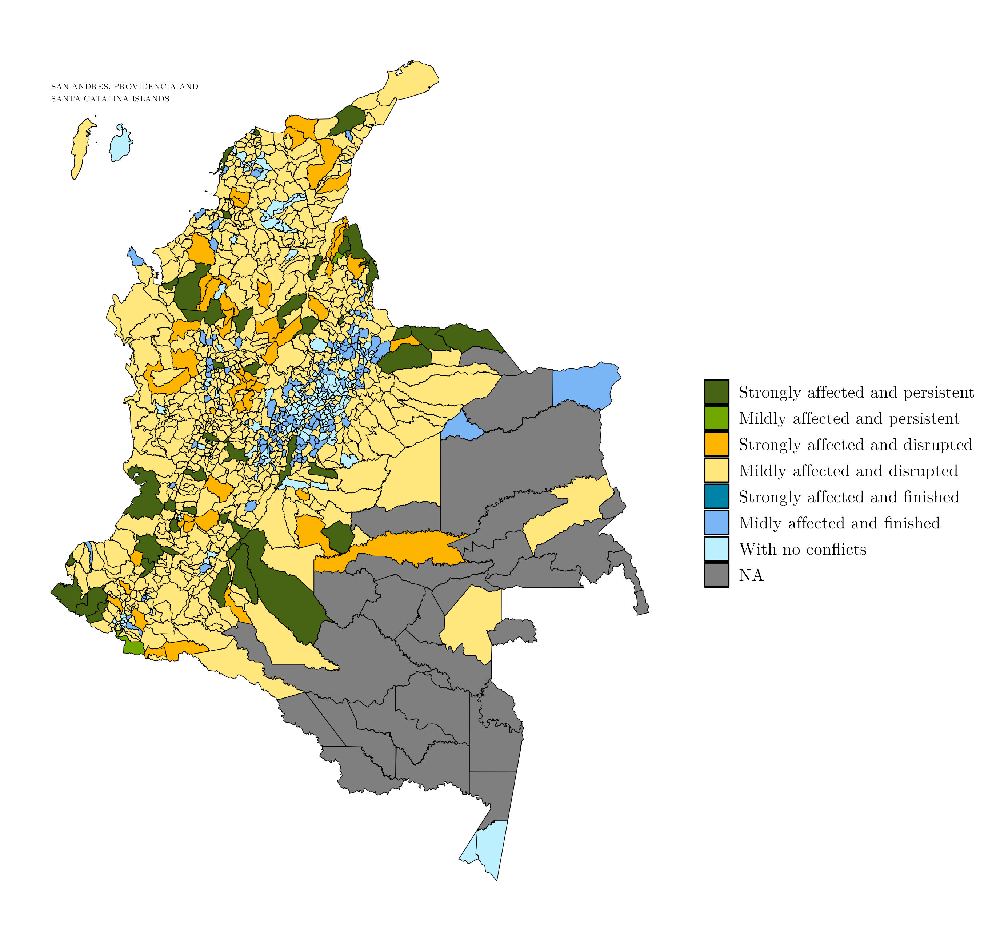
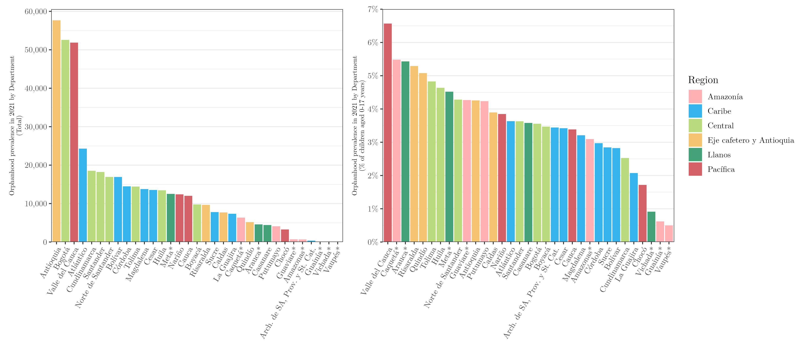
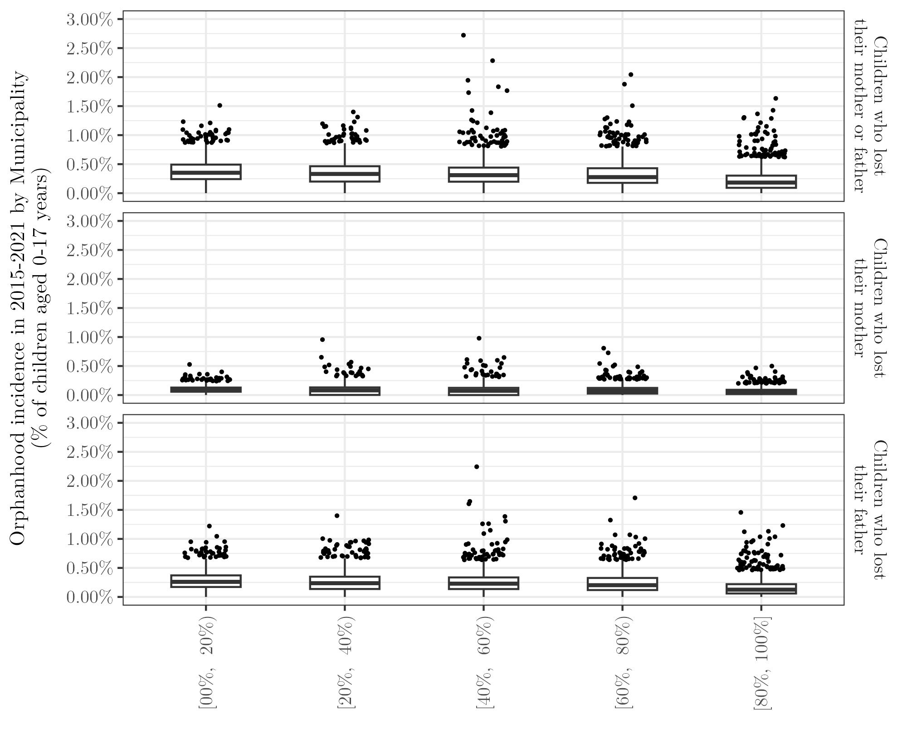
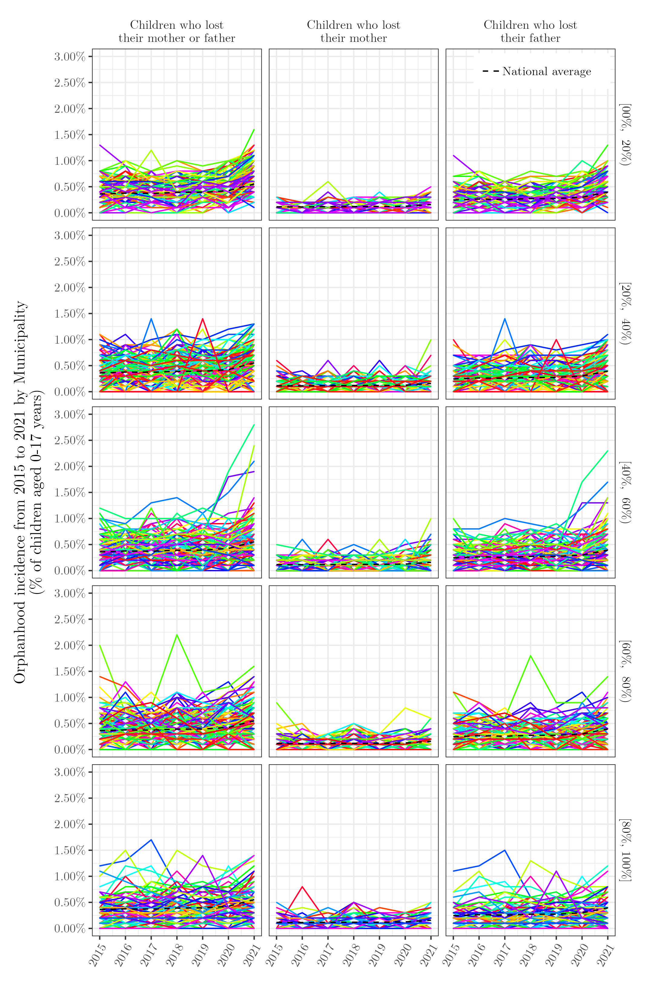
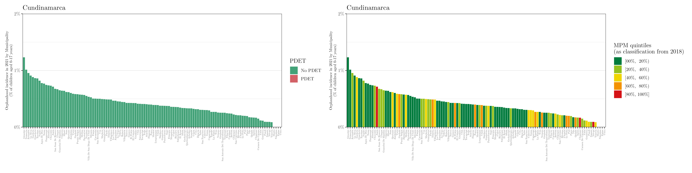
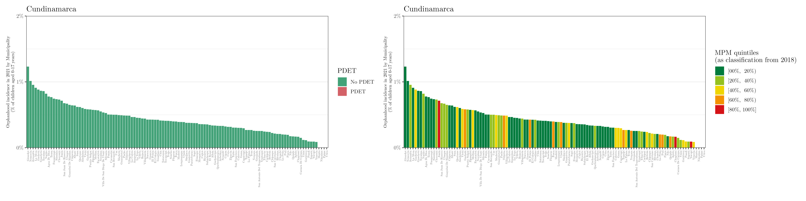

Orphanhood in Colombia
The 32 departments and one capital district (Bogotá) can be grouped together into the 6 natural regions of Colombia, namely, Pacífico, Caribe, Andina, Orinoquía, Amazónica, and Insular.
 |
 |
 |
Also, the Colombia municipalities can be categorized, with respected to the “areas with intense conflict”, according to the Programas de Desarrollo con Enfoque Territorial, PDET (left map), and the classification proposed by Centro de Recursos para el Análisis de Conflictos, CERAC (right map)–considering the period from 2000 to 2012.
 |
 |
The PDET includes 170 municipalities that were prioritized as the territories most affected by armed conflict, with higher levels of poverty, presence of illicit economies, and institutional weakness.
The categorization from CERAC classifies the municipalities according to the presence and intensity of the armed conflict (considering the period from 2000 to 2012).
Orphanhood estimates
The following table shows the orphanhood prevalence and incidence estimates in 2021 (“total” and “% of children aged 0-17 years”) at the national, regional, and department levels.
These are the orphanhood prevalence estimates in 2021 (total and %) for all departments, stratified by regions.

These are the orphanhood incidence estimates from 2015 to 2021 (for children who lost their mother, father, or both) for all departments, stratified by regions.

These are the orphanhood incidence estimates (in %) in 2021 by municipality (per 1,000 children aged 0-17 years).

As a remark, we conducted a sensitivity analysis when handling the outliers and tested the impact of treating outliers classified as PDET as typical values. However, we observed no significant difference in the spatial distribution of orphanhood incidence.
As mentioned before, the municipalities can be grouped based on the presence and intensity of armed conflict. The following image shows the distribution of the orphanhood incidence estimates (in %) by municipalities from 2015 to 2021 grouped by gender and “type of conflict”.

The following plot shows similar results.

Complementary, the plots below show the estimated orphanhood incidence in 2021 (in %) for all municipalities (grouped by department) and classified according to the PDET and CERAC.


 
 


Other tables and raw data
Complementary, the following table shows the orphanhood prevalence and incidence estimates in 2021 (“total” and “% of children aged 0-17 years”) of children who lost their mother, father, or both, at the national, regional, and department levels.
Lastly, the following tables show the orphanhood incidence estimates in 2021 (“total” and “% of children aged 0-17 years”) of children who lost their mother, father, or both, at the municipality level. Each table refers the municipalities from a specific department.